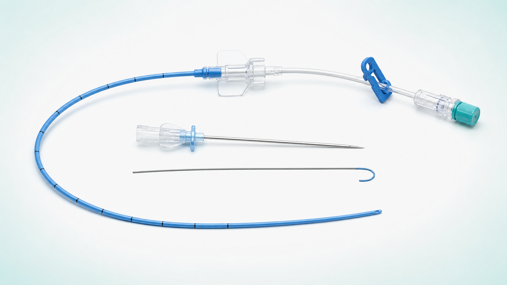

末梢静脈留置針では数日ごとの入れ替えが続く。しかし、PICCや中心静脈カテーテルを選ぶほどではない。そんな静脈路確保の「間」を埋める選択肢として、ミッドラインカテーテルが日本でも注目されています。
国内では2024年以降、複数企業から専用製品が登場し、2026年度診療報酬では上腕の静脈へ留置する手技が新たに評価されました。一方、全国で何本使われているかを示す公的統計は見当たらず、現段階を「広く普及した」とは言えません。
日本でも広がる余地はあります。ただし、導入数を増やすだけでは不十分です。患者ごとのデバイス選択、挿入者の育成、病棟での観察、合併症評価を一つの仕組みにできるかが普及の鍵になります。
ミッドラインカテーテルとは
ミッドラインカテーテルは、主に上腕の尺側皮静脈、上腕静脈、橈側皮静脈などへ留置し、先端が腋窩より末梢に位置するカテーテルです。中心静脈へ先端を置くPICCとは異なり、分類上は末梢静脈カテーテルです。

| デバイス | 主な挿入部位・先端 | 考え方 |
|---|---|---|
| 末梢静脈留置針 | 手背・前腕などの末梢静脈 | 短期間の末梢静脈路で広く使用 |
| ミッドライン | 上腕から挿入し、先端は腋窩より末梢 | 末梢投与が可能で、一定期間の治療が見込まれる場合の選択肢 |
| PICC | 上腕などから挿入し、先端は中心静脈 | 中心静脈投与が必要な治療などで検討 |
留置可能期間、採血、造影剤注入などの適応は製品ごとに異なります。「ミッドラインなら何でも同じ」ではなく、電子添文と院内手順の確認が前提です。また、中心静脈投与が必要な薬剤をミッドラインへ投与することはできません。
製品によって構造や操作、留置期間、使用上の注意が異なります。実際に使用する際は、勤務先で採用している製品の最新版を確認してください。
- Argyle Fukuroi Midline Catheter：電子添文（PDF）
- Argyle Fukuroi Midline Catheter：挿入手技動画（約4分30秒）
- テルモ サーフローMidela：電子添文（PDF）
- BD PowerGlide Pro：電子添文（PMDA・PDF）
- BD PowerGlide Pro：製品構造と挿入方法の紹介
動画や製品ページは理解を助ける資料ですが、視聴だけで手技を実施できることを意味しません。挿入は、院内の教育・認定制度と手順に従って行います。
日本ではどこまで広がっている？
現時点では、全国の普及率や年間留置件数を示す信頼できる公的統計は確認できません。したがって「何％の病院が導入している」と数字で断定することはできません。ただ、製品、制度、臨床報告の3方向で導入の動きははっきりしてきました。
- 2024年：カーディナルヘルスが「Argyle Fukuroi Midline Catheter」を発売
- 2025年：テルモが「サーフローMidela」を発売
- 2026年：診療報酬に「上腕部静脈カテーテル挿入」が新設
- 2026年：日本BDが「BD PowerGlide Pro ミッドラインカテーテル」を発売
厚生労働省への技術提案では、PICCや中心静脈カテーテルの一部が置き換わると仮定し、年間84,240件という潜在的な対象数が示されました。ただし、これは実際の留置件数ではなく、一定の仮定に基づく推計です。
国内の施設報告では、川西市立総合医療センターが年間168件、静岡県立静岡がんセンターが7か月で110件、東北大学病院が2022〜2025年に149件を報告しています。症例数は一部施設の実績で全国像ではありませんが、NPや研修を受けた看護師を中心とした運用が始まっていることが分かります。
今後広がると考えられる理由
「短い末梢ルート」と「中心静脈」の間を埋められる
治療期間、薬剤、血管の状態によっては、通常の末梢静脈留置針では再穿刺が続き、中心静脈カテーテルでは侵襲や管理負担が大きいことがあります。ミッドラインは、この間にある患者へ別の選択肢を提供します。
超音波ガイド下穿刺の技術を生かせる
ミッドラインの挿入では、超音波で上腕の静脈の位置・太さ・走行を確認しながら穿刺します。血管と針先を超音波で確認する基本操作は、血管確保が難しい患者への末梢静脈穿刺や、PICCの挿入にも共通しています。
ただし、適応や挿入手順はデバイスごとに異なるため、それぞれに応じた教育と実技研修が必要です。血管アクセスを専門的に支援する看護師やチームが増えれば、導入しやすくなる可能性があります。
制度上も選択肢として位置づけられた
2026年度診療報酬で上腕部静脈カテーテル挿入が新設されたことは、病院が教育・資材・運用を検討する後押しになります。ただし、点数が付いたことと安全な運用ができることは別です。
米国の普及から見えること
米国ではミッドラインの使用が増えています。米国退役軍人医療施設のデータを用いた2026年の報告では、2016〜2024年にPICCの使用が減る一方、ミッドラインの使用は増加しました。
背景にあるのが、治療内容と期間に応じて適切な血管アクセスデバイスを選ぶ考え方です。2015年に発表されたMAGICでは、末梢から投与できる薬剤を6〜14日間使用する場合、ミッドラインが適切な選択になり得ると示されました。米国CDCも、静脈治療が6日を超える可能性がある場合、短い末梢カテーテルではなくミッドラインまたはPICCを用いることを推奨しています。
ただし、ミッドラインはPICCの安全な代用品と一律に言えるわけではありません。複数施設の比較研究では、重大な合併症の複合評価はミッドラインで低かった一方、閉塞やデバイス抜去など個別の結果は患者背景や留置目的で異なりました。大切なのは「どちらが常に優れているか」ではなく、患者と治療に合うものを選ぶことです。
看護師の仕事はどう変わる？
病棟看護師：観察と情報共有の精度が問われる
病棟看護師の多くが直ちに挿入者になるわけではありません。まず変わるのは、留置されているデバイスの種類を理解し、投与薬剤、留置日数、刺入部・上肢の状態、必要性を継続して確認することです。交代勤務の中で小さな変化を共有する役割は、普及するほど重要になります。
専門研修を受けた看護師：挿入とデバイス選択へ
国内事例では、NPや院内研修を修了した看護師が超音波ガイド下で挿入し、血管アクセスチームを運営しています。将来は、一部の看護師が患者評価、デバイス選択の提案、挿入、留置後評価まで関わる機会が増える可能性があります。
組織：再穿刺回数だけでなくアウトカムを測る
導入後は、成功率、留置期間、予定外抜去、感染、血栓、閉塞、浸潤・血管外漏出、患者の痛み、PICC・中心静脈カテーテル使用の変化などを評価する必要があります。製品を採用しただけでは、普及の成果は判断できません。
合併症は「増える」のか
ミッドラインを導入すると、看護師が観察すべき合併症の種類が新たに増える、という表現は正確ではありません。疼痛、発赤、腫脹、静脈炎、浸潤・血管外漏出、閉塞、血栓、感染、固定不良やカテーテルのずれは、通常の末梢静脈留置針を含む血管内カテーテルでも起こり得ます。
違いは、上腕の比較的深い血管へ挿入され、より長期間留置されることがある点です。刺入部だけを見て終わらず、上肢全体の痛みや腫脹、注入時の違和感、滴下・フラッシュの変化、固定状態、露出長などを、その製品と院内基準に沿って評価します。深部の異常は外見だけでは分かりにくいため、「末梢カテーテルだから安全」と考えないことが大切です。
共通する合併症を、デバイスの長さ、留置部位、留置期間、患者背景に合わせて見る必要があります。異常が疑われた場合は、院内手順に沿って使用を中止し、速やかに報告・評価します。
普及の前に必要な体制
- 適応基準：薬剤、予定治療期間、血管状態からPIVC・ミッドライン・PICCなどを選ぶ
- 挿入者の教育：超音波操作、無菌操作、合併症対応を含む教育と能力評価を行う
- 病棟教育：挿入に関わらない看護師も、日常管理と異常時対応を理解する
- データ収集：成功率だけでなく、予定外抜去や合併症、患者体験まで追う
- 職種間連携：医師、看護師、薬剤師、感染管理部門などが相談できる経路をつくる
米国の看護師主導の血管アクセスチームは、デバイス選択から挿入、評価までを標準化する一つのモデルです。しかし、海外の仕組みをそのまま日本へ移せるとは限りません。各施設の人員、教育、権限、患者層に合わせた設計が必要です。
まとめ：ミッドラインの普及は「器具」より「仕組み」で決まる
日本では専用製品が相次いで登場し、診療報酬にも上腕部静脈カテーテル挿入が加わりました。先行施設の報告も増え、ミッドラインカテーテルが広がる条件は整い始めています。
ただし、全国的な普及率はまだ分からず、すべての患者や施設に適するわけでもありません。看護師に必要なのは、合併症が新しく増えると身構えることではなく、従来からある観察をデバイスの特徴に合わせて深めることです。
ミッドラインが一時的な流行で終わるか、患者の再穿刺や不必要な中心静脈アクセスを減らす選択肢として定着するか。鍵を握るのは、看護師を含むチームが「誰に、なぜ、このデバイスを選ぶのか」を共有できる体制です。
参考資料・出典
- 厚生労働省：医療技術評価提案書（上腕部静脈カテーテル挿入）
- 厚生労働省：令和6年度診療報酬改定資料（医科点数表）
- Cardinal Health：ミッドラインカテーテルの基礎知識
- Cardinal Health：Argyle Fukuroi Midline Catheter 電子添文
- Cardinal Health：川西市立総合医療センター導入事例
- Cardinal Health：静岡県立静岡がんセンター導入事例
- Cardinal Health：東北大学病院導入事例
- テルモ：サーフローMidela発売のお知らせ
- テルモ：サーフローMidela 電子添文
- 日本BD：BD PowerGlide Pro ミッドラインカテーテル発売のお知らせ
- Chopra V, et al.：The Michigan Appropriateness Guide for Intravenous Catheters（MAGIC）
- CDC：Summary of Recommendations—Intravascular Catheter-Related Infections
- 米国退役軍人医療施設におけるPICC・ミッドライン使用動向（2016〜2024年）
- Swaminathan L, et al.：Midline Catheters vs PICCs for Short-term Indications
- 看護師主導血管アクセスチームとデバイス選択に関する研究
本記事は2026年7月16日時点で確認できる情報をもとに作成しています。国内症例は各施設の報告であり、全国の普及状況を示すものではありません。メーカー資料は製品情報・導入事例の確認に用い、安全性や適応は公的資料・独立研究もあわせて参照しました。本記事は個別の手技や治療を指示するものではありません。実際の使用・管理は、最新の電子添文、院内手順、医師の指示に従ってください。